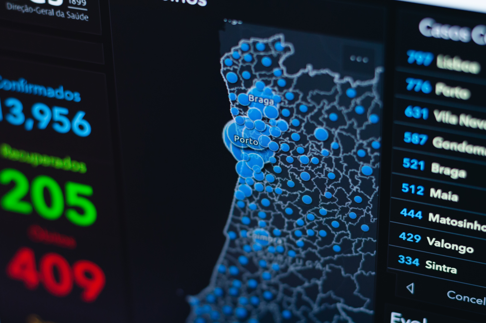

I am currently doing my Ph.D. in Systems and Industrial Engineering at the University of Arizona and also doing a minor in
Statistics. My research focuses on analyzing and creating predictive models for real-world industrial applications by using machine learning algorithms. I have experience in Apache Spark(PySpark) framework for big data analysis. I have experience in regression, classification, and clustering.
I have done several projects involving structured and unstructured data that includes text analysis and image classification using deep learning. I have also experience in anomaly detection, calibrating parameters of a nonlinear system, materials
search in a large space for the capacitor, analyzing time-series model for the panel data, clustering the sensor networks and developed prognosis modeling for each cluster, etc.

An ensemble of Convolution Neural Network is used to classify the abnormal X-rays from the normal ones.
X-ray images are hard to classify for any models. We used a complex version of CNN to build a classification model.
The ensemble framework boosts the accuracy of the model as different CNN architecture helps detect the different types of bone fractures.

In this project, sentiment analysis of the tweet data is done by using Bidirectional Encoder
Representations from Transformers (BERT). These tweets have multi-levels and multi classes.
BERT is the state of the art method at the moment for the NLP. We added the output layer with a
large vocabulary based pre-trained BERT model and then fine-tuned the model. The large case BERT
is used in this project. The performance is better compared to other popular methods like
RNN, LSTM, GRU.

A classification predictive model is created in this project with the response being whether the salary is in the top quartile or not.
The dataset has the issue of an imbalanced class, meaning one class has very few data points compared to the other class.
We used different techniques to handle the imbalanced class like using SMOTE or upsampling or downsampling or even taking into consideration of different evaluation matrices and choose the best one based on the performance. We fitted different types of machine
learning models to get the best predictions.
Also, we used different evaluation metrics like F1 scores, ROC-AUC to describe which model works best.

The dataset contains the article title along with the article writer and its number of upvotes or downvotes.
We visualize the data in Tableau to find some important characteristics of this dataset.
We then created a deep learning model to analyze the title of each article to determine the popularity.
An embedding projector is also used to find similar words.

The dataset is panel data where there are multiple time-series data for each user and each user have time-series data. The data is about an app where a user completes a set of missions to improve their health.
The analysis contains cross-sectional and time-series variation which is analyzed. Also, there is time series forecasting model where we can do predictive analysis.
here are two files for the dataset. One contains the relevant information of a set of missions completed by a specific user.
If a user completes a set of goals that will mark a single mission completion.
The second dataset contains data regarding the information of each goal completion by users.

It is important that credit card companies are able to recognize fraudulent credit card transactions so that customers are not charged for items that they did not purchase.
The datasets contains transactions made by credit cards in September 2013 by european cardholders. This dataset presents transactions that occurred in two days, where we have 492 frauds out of 284,807 transactions.
The dataset is highly unbalanced, the positive class (frauds) account for 0.172% of all transactions. the dataset is taken from the kaggle site.